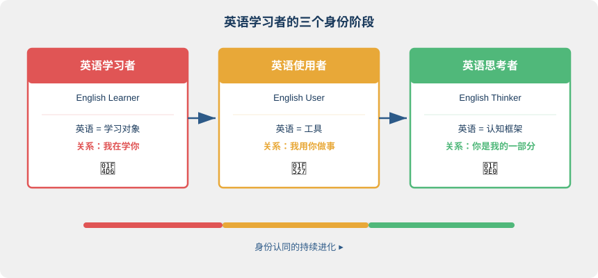
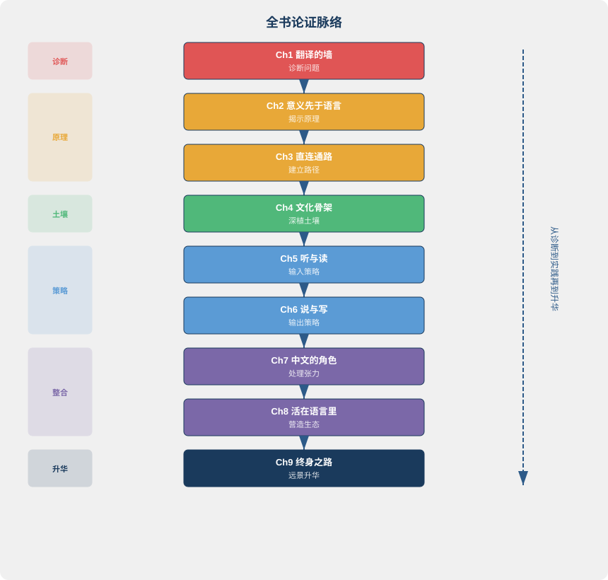
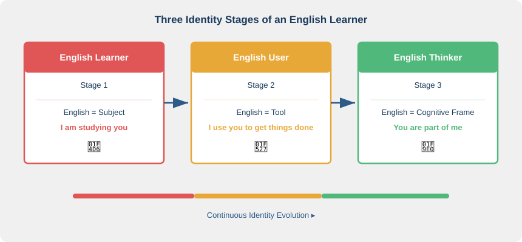
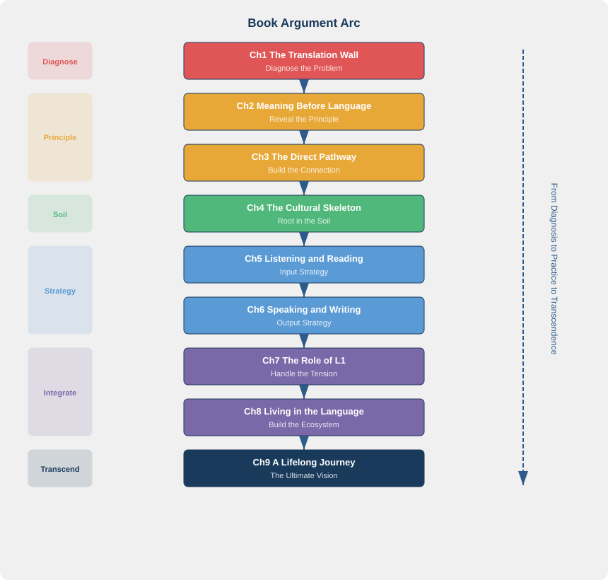

第九章：终身之路
The Lifelong Journey
"To have another language is to possess a second soul." — Charlemagne
核心问题：从「学英语的人」到「用英语思考的人」，这个转变意味着什么？
9.1 开篇：一个波兰水手的英语
1874 年，一个十七岁的波兰少年离开家乡，去法国马赛当了水手。他叫 Józef Teodor Konrad Korzeniowski，母语是波兰语，在家也说法语。英语？一个字都不会。
四年后，他登上一艘英国商船，开始了与英语的漫长纠缠。二十一岁才接触的语言，学起来有多难？他后来回忆，最初几年他靠翻字典读英文报纸，一页纸要查几十个词。船上的英国水手笑他口音古怪，他沮丧到想放弃。
但他没有放弃。他不停地读，不停地写，不停地用这门后天习得的语言去抓住脑中涌动的画面和想法。1899 年，他用英文写出了 Heart of Darkness（《黑暗之心》）。这部小说日后被公认为英语文学的巅峰之作之一。
他就是 Joseph Conrad（约瑟夫·康拉德）。
Conrad 的英语从来不是"完美"的。他的句法有时冗长，用词偶尔带着非母语者的痕迹。同时代的批评家 H.G. Wells 读他的手稿时会忍不住在旁边标注语法修改。但没有人否认，他的英文散文在节奏感和意象密度上超越了绝大多数英语母语作家。他不是"学英语学得好的外国人"，他是英语文学史上最伟大的小说家之一。
还有一个更晚近的例子。华裔作家李翊云（Yiyun Li）在中国长大，成年后才深度学习英文写作。她选择放弃母语，完全用英文创作小说和回忆录，作品发表在 The New Yorker，获得多项美国文学大奖。她曾说："我用英文写作，是因为英文让我成为了一个不同的思考者。"
二十一岁才开始学英语，晚不晚？如果目标是"说得像伦敦土生土长的人"，那确实晚了。但那个目标本身就值得怀疑。Conrad 的目标从来不是模仿母语者，而是用英语这门后天习得的语言去捕捉他作为水手、作为波兰流亡者、作为世界观察者脑中翻涌的那些"意"。他做到了，而且做到了连母语者都望尘莫及的程度。
从"学英语的人"到"用英语思考和创造的人"，Conrad 走了大约十五年。这一章要讨论的，就是这条路本身。
9.2 身份转变：从学习者到思考者
Norton 在 2000 年出版的《身份与语言学习》（Identity and Language Learning）中提出了一个关键概念：身份投资（Identity Investment）。她的核心论点是，语言学习不只是技能习得，更是身份建构。学习者如何定义自己与目标语言的关系，深刻地决定了学习的轨迹和终点。
传统的二语习得研究把学习动机分为"工具性动机"和"融合性动机"。Norton 认为这远远不够。她用"投资"替代"动机"。当你学英语时，你不只是在花时间，你是在投资一个新的身份。这个身份可能是"能与世界对话的专业人士"，也可能是"拥有双重文化视角的思考者"。你投资什么样的身份，决定了你会走多远。
基于这个视角，英语学习者的身份演进可以分为三个阶段。
第一阶段：英语学习者（English Learner）。 英语是学习对象。你和它的关系是"我在学你"。你背单词、做语法题、准备考试。英语存在于课本、APP 和培训班中，离开这些场景它就消失了。你的身份是"学生"，英语的身份是"学科"。这个阶段的典型心理是：我在努力，但我还不行。
第二阶段：英语使用者（English User）。 英语是工具。你和它的关系是"我用你做事"。你用英文写邮件、读报告、开会、谈判。英语从课本走进了真实生活，你不再为了"学"而接触它，而是为了"做"而使用它。这个阶段的典型心理是：虽然不完美，但能用。
第三阶段：英语思考者（English Thinker）。 英语是认知框架的一部分。你和它的关系是"你是我的一部分"。你用英文写日记时不是在"练英文写作"，而是在"用英文整理思绪"。你读英文哲学书不是为了提高阅读能力，而是因为有些思想在英文的表述中更精确。英语不再是外在的，它住进了你的认知结构里。这个阶段的典型心理是：我没有在"用英文"，我只是在思考。

大多数中国英语学习者永远停留在第一阶段。学了十年、二十年，依然把自己定位为"英语学习者"。永远在学，永远不够好，永远觉得"等我英语再好一点就可以开始用了"。他们从未跨过本书第二章和第三章所论述的那道门槛：从"意→中文→英文"的翻译回路，切换到"意→英文"的直连通路。
为什么停滞发生在第一阶段？因为"学习者"身份自带一个隐含假设：英语是一个有边界的知识体，学完了就毕业了。这个假设让你永远在"准备"而不是"行动"。你在等一个永远不会到来的"准备好了"的时刻。而真正跨入第二阶段的人，无一例外，都是在觉得"还没准备好"的时候就开始用了。
从第一阶段到第三阶段的转变，不是词汇量的增长或语法准确度的提升。那些是量变。真正发生的是认知架构的质变。你的大脑不再把英语当作一个需要调用的外部模块，而是把它内化为思维系统的一部分。这个质变的标志不是"说得好"，而是"忘了自己在说英文"。当你用英文讨论问题时不再意识到自己在"用外语"，就像你用筷子吃饭时不再意识到手指的动作，那一刻，英语从外在技能变成了内在能力。
Conrad 花了大约十五年完成这个转变。本书前八章提供的每一个原理和方法，都是为了缩短这条路。
9.3 双语心智：拥有两副眼镜
Cook 在 2002 年提出了一个深刻的概念：多能力（Multi-competence）。他的核心论点是，双语者不是"两个单语者的组合"，而是一种独特的认知状态。就像混合了红色和蓝色的颜料不是"红+蓝"，而是一种全新的紫色。双语者的心智不是两套独立系统的简单叠加，而是一个新的、整合的认知整体。
传统观点把双语者当作"两个半成品单语者"。你的英文不如英语母语者，你的中文也因为英文的干扰而"退化"了。Cook 彻底否定了这个视角。双语者不是两个残缺的单语系统的拼接，而是一个完整的、独特的多语言认知系统。评价双语者的标准不应该是"离母语者有多远"，而是"拥有了单语者无法拥有的什么"。
答案是三种独特的认知优势。
第一，认知灵活性（Cognitive Flexibility）。 双语者能在两套概念系统之间切换，看到单语者看不到的角度。一个只说中文的人讨论"时间"时，倾向于用空间隐喻，时间"长短"、日子"前后"。一个同时掌握英文的人会注意到，英文用 "spend time" 把时间当货币，用 "time flies" 把时间当运动物体。两套隐喻叠加，你对"时间"这个概念的理解就比任何单语者都丰富。
第二，文化同理心（Cultural Empathy）。 掌握两种语言意味着你能理解"同一件事在不同文化框架中意味着什么"。"面子"在中文文化中是一个重力级别的社会概念，英文中 "face" 的社会重量远不及此。反过来，"privacy" 在英文文化中是一项基本权利，中文里"隐私"这个词直到近几十年才获得类似的分量。双语者能感受到这些差异，而不是简单地做词汇对等。
第三，概念精确度（Conceptual Precision）。 有些概念在一种语言中有词，在另一种中没有。双语者因此拥有更丰富的概念工具箱。
举几个具体的例子。
中文有"缘分"，英文没有直接对应词。但你可以用 "serendipity"（偶然的美好发现）+ "destiny"（命运）+ "connection"（联结）来从不同侧面逼近它。每个英文词照亮"缘分"的一个面。反过来，这种拆解也让你对"缘分"这个中文概念有了更清晰的认识：它到底包含了哪些层次？偶然性、命定感、人与人之间的联结。你原本笼统地感受到的，现在可以分层次地理解了。
英文有 "accountability"（可追责性），中文没有精确对应词。"责任"太宽泛，"问责"又太狭窄。但当你通过英文真正理解了 accountability 的含义（不只是"谁负责"，而是"谁为结果承担可追溯的后果"），你的思维工具箱就多了一件精密仪器。下次在中文语境下讨论项目管理时，你会自动追问：我们说的"责任"，到底是 responsibility 还是 accountability？这不是语言洁癖，是认知精度的提升。
Pavlenko 在 2005 年的研究《情感与多语》（Emotions and Multilingualism）揭示了更深层的现象：双语者在不同语言中体验情感的方式是不同的。有人用母语表达愤怒更强烈，用二语表达爱意更自在。有人发现用英文写日记时更坦诚，因为二语提供了一种"情感距离"，让他们能更冷静地审视自己。这不是矛盾，而是两种语言为情感和思考提供了不同的通道和色彩。
两种语言不是互相竞争，而是互相补充。你的"意"（本书贯穿始终的那个核心概念）在双语心智中变得更丰富了。中文擅长意象、类比、整体把握、含蓄表达；英文擅长逻辑切分、时间标注、证据链条、精确定义。两套系统并行运转，你的认知能力不是 1+1=2，而是产生了任何单一语言无法达到的新维度。
这就是 Conrad 用行动证明的事实：英语不只给你另一种表达方式，它给你另一种理解世界的方式。李翊云也说过类似的话。拥有两种语言，就像拥有两个手电筒，照射角度不同，覆盖的阴影不同，合在一起才接近全貌。
9.4 终身习得：没有终点的旅程
语言习得没有"学完了"的那一天。这不是鸡汤，而是语言学的基本事实。即使母语者，也在终身习得新词、新表达、新含义。一个五十岁的中国人今天可能刚学会"内卷"这个词的确切用法；一个英语母语者去年才开始理解 "gaslighting" 的精确含义。语言是活的，它每天都在生长。你不可能"学完"一种活着的语言，就像你不可能"看完"一条不断流淌的河。
Larsen-Freeman 在 2011 年提出了一个优雅的理论框架：语言作为复杂适应系统（Complex Adaptive System）。她的核心观点是，语言不是一套固定的规则集，等你学完就可以"掌握"。语言是一个不断演化的动态系统，学习者和语言在互动中共同改变。你使用英语的方式塑造了你的英语，你的英语又反过来影响你下一次使用它的方式。这是一个没有终态的动态循环。
从这个角度看，你的英语水平不是一个固定的数值，而是一个随时间、场景和使用方式而变化的动态状态。
这意味着什么？你在某些领域可能接近母语者水平，比如你工作中天天用的技术英语。在另一些领域你可能还是初学者，比如英文诗歌或法律文书。这完全正常。即使一个英语母语者，面对量子物理论文或莎士比亚的十四行诗，也可能一头雾水。没有人在所有领域都"精通"自己的语言。
你的英语能力更像一张不规则的地图。有些区域高度发达，有些还是空白。这张地图会随着你的生活经历、职业方向和兴趣变化而持续变形。五年前你可能一句商务英语都说不出口，现在你可以用英文谈判合同条款。五年后你可能开始读英文小说，又打开了一片新领地。某个你曾经熟练的领域，如果长期不用，也会慢慢褪色。这也是正常的。语言能力是一个活的、动态的、终身的过程，而不是一个考完就锁定的分数。
接受这个事实，是终身习得心态的第一步。
第二步是放弃"学完英语"的执念。"学完"这个概念本身就是翻译思维的产物。我们习惯把英语当作一门有终点的课程，像数学课一样学完就结了。但语言不是课程，语言是生态。你不会"学完"一片森林，你只能持续地在其中行走、探索、发现新物种。放弃终点感，你反而能走得更远，因为你不再焦虑"到了没有"，而是专注于"走的每一步"。
第三步是享受过程本身。每一个新学会的表达，都是一扇新打开的窗。第一次理解 "bittersweet" 不只是"苦甜"而是一种甜蜜与忧伤交织的复杂情感，那一刻你的概念世界扩展了。第一次在写作中自然地用出 "nuanced" 这个词来替代"有细微差别的"，那一刻你的表达精度提升了。第一次听懂英文脱口秀里一个文化梗，跟全场一起笑出来，那一刻你感受到了另一种幽默的频率。这些微小的获得不能用分数衡量，但它们累积起来就是认知的生长。
这条路没有终点。但正因为没有终点，每一个阶段的风景都值得驻足。
9.5 英语与你：不只是技能，是认知扩展
回到全书的核心命题：意在言先，意先于语言存在。但这只是故事的一半。
Vygotsky 在 1986 年出版的经典著作《思维与语言》（Thought and Language）中论证了另一半：语言不只是思维的表达工具，语言本身参与思维的建构。思维和语言的关系不是单向的"思维→语言"，而是辩证的。思维催生语言，语言反过来重塑思维。
这个辩证关系在第二语言中体现得尤为明显。一个没有 "accountability" 这个词的人，不是"无法思考可追责性"，而是不太容易注意到这个维度的存在。当你学会了这个词，它就像一盏灯，照亮了你认知地图上一个原本模糊的区域。语言提供了思维的脚手架。有了脚手架，你才能攀上原本够不到的高度。
这意味着，当你习得英语，你不只是多了一种表达"意"的方式。你的"意"本身也被改变了，变得更丰富、更多维。你拥有了两套"意→表达"的映射系统。你能从两个文化视角看同一个问题。你的概念世界比单语者更丰富、更精确、更灵活。
想象这样一个场景。你的团队在讨论一个复杂的组织问题。用中文想，你可能会从"关系""面子""大局"的角度入手。切换到英文想，你可能会从 "accountability""incentive structure""trade-off" 的角度入手。两种思路不矛盾，它们照亮了同一个问题的不同面。只有拥有双语心智的人，才能同时看到这两个面。
Conrad 从未给自己的英语"打分"。他也不需要。英语对他而言不是一个可以用分数衡量的技能，而是他感知世界和创造文学的方式。就像你不会给自己的"中文水平"打分一样，因为中文不是你的技能，是你的一部分。当英语也变成你的一部分，"水平"这个词就失去了意义。
所以，学英语的终极价值不是"能和外国人交流"，不是"能看懂原版电影"，甚至不是"能用英文工作"。这些都是副产品，重要的副产品，但仍然是副产品。
终极价值是：你在扩展你的心智。
你的世界变大了。你能读的书多了一倍，能听的声音多了一倍，能理解的视角多了一个维度。你不是在"学一门外语"，你是在给大脑安装一套新的认知操作系统。这套新系统不会替代旧系统，而是与旧系统协同运行，让你的认知能力抵达任何单一语言无法企及的高度。
9.6 回顾：全书的一张图
九章写完，让我们退后一步，看看全书的论证脉络。

这九章不是九个独立话题，而是一个连贯的论证。从"当前方法为什么不行"（Ch1）出发，追问"核心概念是什么"（Ch2-3），建立"深层土壤"（Ch4），展开"具体操作"（Ch5-6），处理"现实张力"（Ch7-8），最终指向"更大的图景"（Ch9）。每一章是一块拼图，拼在一起才是完整的画面。
全书的核心论点，浓缩成三句话：
第一，意在言先。 你脑中先有意，后有语言。英语学习的本质是让意与英文之间建立不经中文中介的直连通路。
第二，文化在词先。 英语不只是词汇和语法的集合，它承载着一整套文化逻辑。不理解文化骨架，你只能在语言表面滑行。
第三，认知在技能先。 英语学习的终点不是一项技能的达标，而是一次认知的扩展。你不是在学外语，你是在给心智安装新的操作系统。
如果你只能记住一句话，那就是这本书的标题：意在言先。先有意，后有语言。英语学习的一切，都围绕着如何让你的意与英文之间建立不经中文中介的直连通路。
9.7 最后的语言实验：给未来的自己写一封英文信
前八章的语言实验都有具体的技术目标，训练直连通路、练习文化敏感度、审计认知栖息地。这一个不同。这是你和自己的一次对话。
任务： 用英文给一年后的自己写一封信。
内容建议： - 你现在对英语学习的理解。读完这本书，什么观点最触动你？什么认知发生了变化？ - 你打算做出的具体改变。不是"我要更努力学英语"，而是"我每天用英文听 30 分钟播客""我把手机语言切换成英文""我每周用英文写一篇工作复盘"。 - 你期望一年后的自己是什么状态。不用宏大，越具体越好。
规则只有一条：不求完美，只求真诚。
不用在意语法是否准确。不用在意用词是否高级。你正在用英文思考和表达，这本身就是"意→英文"直连通路的一次真实激活。
写的过程中你会发现，有些想法用英文说出来比你预期的顺畅，有些则卡住了。卡住的地方，恰恰是你下一步需要成长的方向。也许你发现"感恩"用英文说很顺畅（"I'm grateful for..."），但"纠结"却找不到一个合适的英文词。这种不对称本身就是有价值的信息，它告诉你，你的英文认知地图在哪些区域还有空白。
写完后，标上今天的日期。把它放在一年后你一定会看到的地方：邮箱里设一封定时发送的邮件，日历里设一个提醒，或者就夹在这本书的最后一页。一年后打开它。你会发现，你的英文、你的思考方式、你和英语的关系，都已经不同了。这封信本身就是你认知变化最真实的刻度尺。
9.8 结语
回到这本书的四个字：意在言先。
意先于语言。这是起点。但语言一旦被真正掌握（不是背会了多少单词，而是让它住进了你的认知结构），它会反过来丰富你的意。让你看到原先看不见的维度，想到原先想不到的角度，表达原先无法表达的精微。
这条路很长。没有终点线，没有毕业证，没有"21 天精通英文思维"。但每一步都不白走。每一次你不经翻译地理解了一个英文句子，每一次你用英文直接捕捉了一个稍纵即逝的想法，每一次你在两种语言之间自如切换而感到世界变得更宽了，那就是一步。
Conrad 二十一岁起步，用了十五年成为英语文学大师。李翊云成年后才转向英文写作，如今是美国文坛的重要声音。你从今天起步，不需要十五年，因为你手中有了一张地图。
你不是在学一门外语。你是在扩展你的心智。
出发吧。
参考文献
-
Norton, B. (2000). Identity and Language Learning: Gender, Ethnicity and Educational Change. London: Longman. — 首次系统论证语言学习与身份建构的深层关联，提出"身份投资"（Identity Investment）概念，揭示学习者的身份定位如何决定语言习得的轨迹和终极成就。
-
Cook, V. (2002). Background to the L2 user. In V. Cook (Ed.), Portraits of the L2 User (pp. 1–28). Clevedon: Multilingual Matters. — 提出"多能力"（Multi-competence）概念，论证双语者不是"两个不完美的单语者"，而是拥有独特认知系统的多语言使用者，从根本上重新定义了双语者的评价标准。
-
Larsen-Freeman, D. (2011). A complexity theory approach to second language development/acquisition. In D. Atkinson (Ed.), Alternative Approaches to Second Language Acquisition (pp. 48–72). London: Routledge. — 将复杂适应系统理论引入二语习得研究，论证语言不是固定规则集而是不断演化的动态系统，学习者与语言在互动中共同改变。
-
Vygotsky, L. S. (1986). Thought and Language (A. Kozulin, Trans. & Ed.). Cambridge, MA: MIT Press. (Original work published 1934) — 论证思维与语言的辩证关系：语言不只是思维的表达工具，语言本身参与思维的建构过程，二者在发展中相互塑造。
-
Pavlenko, A. (2005). Emotions and Multilingualism. Cambridge: Cambridge University Press. — 探讨多语者在不同语言中情感体验的差异，揭示语言选择如何影响情感加工、自我认知和身份认同，为双语心智的独特性提供了情感维度的实证支持。
-
Conrad, J. (1899). Heart of Darkness. Edinburgh: Blackwood's Magazine. — Joseph Conrad 以非母语写就的英语文学经典，证明了后天习得者同样能达到甚至超越母语者的文学高度。
-
Li, Y. (2017). Dear Friend, from My Life I Write to You in Your Life. New York: Random House. — 华裔作家李翊云的英文回忆录，深刻探讨了成年后选择用第二语言写作的心理体验与身份重建。
Chapter 9: The Lifelong Journey
"To have another language is to possess a second soul." — Charlemagne
Core question: What does it mean to shift from "someone who learns English" to "someone who thinks in English"?
9.1 A Polish Sailor's English
In 1874, a seventeen-year-old Polish boy left home for Marseille to become a sailor. His name was Józef Teodor Konrad Korzeniowski. His mother tongue was Polish; he spoke French at home as well. English? Not a word.
Four years later he boarded a British merchant ship and began a long entanglement with the English language. How hard is it to learn a language you first encounter at twenty-one? He recalled later that in the early years he read English newspapers with a dictionary at his elbow, looking up dozens of words per page. British sailors on board laughed at his strange accent. He was frustrated enough to consider giving up.
But he didn't. He kept reading, kept writing, kept using this late-acquired language to chase the images and ideas churning in his mind. In 1899, he published Heart of Darkness in English. The novella is now recognized as one of the peaks of English-language literature.
He is Joseph Conrad.
Conrad's English was never "perfect." His syntax could be sprawling. His word choices occasionally carried a non-native trace. The critic H.G. Wells, reading Conrad's manuscripts, couldn't resist penciling grammar corrections in the margins. Yet nobody denied that Conrad's English prose, in its rhythmic power and density of imagery, surpassed the vast majority of native-born English writers. He wasn't "a foreigner who learned English well." He was one of the greatest novelists in the history of English literature.
There's a more recent parallel. Yiyun Li, a Chinese-born writer, grew up in China and committed to English-language writing only as an adult. She chose to abandon her mother tongue entirely, composing novels and memoirs exclusively in English. Her work has appeared in The New Yorker and won multiple American literary prizes. She once wrote: "I write in English because English made me a different thinker."
Is twenty-one too late to start learning English? If the goal is "sound like a Londoner born and bred," then yes, probably. But that goal itself deserves scrutiny. Conrad never aimed to imitate native speakers. His goal was to use this late-acquired language to capture the yì (pre-linguistic meaning-intention) roiling inside him, as a sailor, as a Polish exile, as an observer of the world. He succeeded, and he did it at a level most native speakers can only envy.
From "someone who learns English" to "someone who thinks and creates in English," Conrad walked roughly fifteen years. This chapter is about that path itself.
9.2 Identity Shift: From Learner to Thinker
In her 2000 book Identity and Language Learning, Norton introduces the notion of identity investment. Her central claim: language learning is not merely skill acquisition; it's identity construction. How learners define their relationship with the target language decisively shapes the trajectory and destination of learning.
Traditional SLA research divides motivation into "instrumental" and "integrative." Norton finds this insufficient. She replaces "motivation" with "investment." When you learn English, you aren't just spending time; you're investing in a new identity. That identity might be "a professional who can engage the world" or "a thinker with dual cultural perspectives." What identity you invest in determines how far you go.
From this angle, the evolution of the English learner's identity can be described in three stages.
Stage One: English Learner. English is the object of study. Your relationship with it is "I am learning you." You memorize vocabulary, drill grammar, prepare for exams. English lives in textbooks, apps, and courses; outside those contexts it vanishes. Your identity is "student"; English's identity is "subject." The typical mindset: I'm trying, but I'm not there yet.
Stage Two: English User. English is a tool. Your relationship with it is "I use you to get things done." You write emails, read reports, run meetings, negotiate in English. English has moved from the textbook into real life. You no longer encounter it to "learn" but to "do." The typical mindset: not perfect, but functional.
Stage Three: English Thinker. English is part of your cognitive framework. Your relationship with it is "you are part of me." When you keep a diary in English, you aren't "practicing writing"; you're sorting your thoughts in English. When you read philosophy in English, it isn't to improve reading skill but because some ideas are more precisely expressed in English. English is no longer external; it has moved into your cognitive structure. The typical mindset: I'm not "using English." I'm thinking.

Most Chinese learners of English stay in Stage One for life. They study for ten, twenty years and still define themselves as "English learners," always learning, never good enough, always thinking "once my English is a bit better I'll start using it." They never cross the threshold discussed in Chapters 2 and 3: shifting from the "yì → Chinese → English" translation loop to the direct "yì → English" pathway.
Why does stagnation happen in Stage One? Because the "learner" identity carries a hidden assumption: English is a bounded body of knowledge that you complete and then graduate from. That assumption keeps you in "preparation" rather than "action." You wait for a "ready" moment that never comes. Everyone who actually crosses into Stage Two does so while feeling "not ready yet."
The shift from Stage One to Stage Three isn't a matter of vocabulary growth or grammatical accuracy. Those are quantitative changes. What actually happens is a qualitative change in cognitive architecture. Your brain no longer treats English as an external module to invoke; it internalizes English as part of the thinking system. The mark of this change isn't "speaking well" but "forgetting that you're speaking English." When you discuss an issue in English without noticing you're "using a foreign language," like using chopsticks without noticing your fingers, in that moment English moves from external skill to internal capacity.
Conrad took roughly fifteen years to complete this shift. Every principle and method in the first eight chapters aims to shorten that journey.
9.3 The Bilingual Mind: Two Pairs of Glasses
Cook's 2002 work introduces a powerful concept: multi-competence. His core argument: the bilingual isn't "two monolinguals in one" but a distinct cognitive state. Just as mixing red and blue paint produces not "red plus blue" but a new color, purple, the bilingual mind is not two independent systems added together. It's a new, integrated cognitive whole.
The traditional view treats bilinguals as "two incomplete monolinguals." Your English falls short of native speakers; your Chinese is "degraded" by English interference. Cook rejects this entirely. Bilinguals aren't two incomplete monolingual systems cobbled together. They constitute one complete, distinctive multilingual cognitive system. The right standard for evaluating bilinguals isn't "how far from the native speaker" but "what they have that monolinguals don't."
The answer involves three distinct cognitive advantages.
First, cognitive flexibility. Bilinguals can switch between two conceptual systems and see angles monolinguals miss. A Chinese-only speaker discussing "time" tends toward spatial metaphor: time has "length" (长短), days have "front and back" (前后). Someone who also commands English notices that English treats time as currency ("spend time") or as a moving object ("time flies"). Two sets of metaphors together yield a richer understanding of "time" than either monolingual can reach.
Second, cultural empathy. Owning two languages means you grasp "what the same thing means within different cultural frames." 面子 (face) in Chinese culture is a heavyweight social concept; English "face" carries far less social weight. Conversely, "privacy" in English culture is a fundamental right; in Chinese, 隐私 gained similar weight only in recent decades. Bilinguals sense these differences instead of simply equating words across languages.
Third, conceptual precision. Some concepts have a word in one language but not in the other. Bilinguals therefore hold a richer conceptual toolkit.
A few concrete examples. Chinese has 缘分 (yuánfèn), fateful connection, serendipitous meeting, with no direct English equivalent. You can approach it through "serendipity" + "destiny" + "connection"; each English word illuminates one facet. The unpacking also sharpens your grasp of the Chinese concept: What layers does it actually contain? Chance, inevitability, human connection. What you once felt vaguely, you can now understand in distinct layers.
English has "accountability," who bears traceable consequences for outcomes, without a precise Chinese match. 责任 is too broad; 问责 too narrow. But once you truly grasp accountability through English, your mental toolkit gains a precision instrument. Next time you discuss project management in Chinese, you may automatically ask: when we say 责任, do we mean responsibility or accountability? That's not linguistic pedantry. It's cognitive precision.
Pavlenko's 2005 study Emotions and Multilingualism uncovers a deeper layer: bilinguals experience emotions differently in different languages. Some express anger more intensely in L1, love more freely in L2. Others find diary-writing in English more candid, because the second language offers "emotional distance" for calmer self-examination. This isn't contradiction; it shows that each language provides different channels and colorings for emotion and thought.
The two languages don't compete. They complement. Your yì, the central concept running through this book, becomes richer in the bilingual mind. Chinese excels at imagery, analogy, holistic grasp, and indirect expression. English excels at logical segmentation, temporal marking, evidential chains, and precise definition. Two systems running in parallel don't just add up. They reach dimensions impossible for any single language alone.
This is what Conrad proved with his life's work: English doesn't just give you another way to express; it gives you another way to understand the world. Yiyun Li has said something similar. Owning two languages is like owning two flashlights. Different angles, different shadows. Together, you get closer to the whole picture.
9.4 Lifelong Acquisition: A Journey Without End
There's no day when language acquisition is "finished." That isn't motivational rhetoric; it's a linguistic fact. Even native speakers acquire new words, expressions, and meanings throughout life. A fifty-year-old Chinese speaker may have learned the precise usage of 内卷 only recently. An English native may have grasped "gaslighting" precisely only last year. Language is alive. It grows every day. You can't "finish" a living language any more than you can "finish" a flowing river.
Larsen-Freeman's 2011 framework, language as a complex adaptive system, captures this well. Language isn't a fixed rule set you master and then "have." It's a constantly evolving dynamic system where learners and language co-change through interaction. How you use English shapes your English; your English, in turn, shapes how you use it next. A dynamic loop with no final state.
From this angle, your English level isn't a fixed number but a dynamic state that varies over time, context, and mode of use.
What does this imply? In some domains you may approach native-level proficiency, the technical English you use daily at work. In others you may still be a beginner, English poetry or legal documents. That's entirely normal. Even a native English speaker can be lost with quantum physics papers or Shakespearean sonnets. Nobody "masters" their language in every domain.
Your English ability is more like an uneven map. Some regions are highly developed; others remain blank. The map keeps reshaping with your life experience, career direction, and interests. Five years ago you might not have been able to speak a sentence of business English; now you negotiate contract terms. In five years you may take up English fiction and open new territory. Areas you once commanded may fade if unused. That's normal too. Language ability is a living, dynamic, lifelong process, not a score locked in after an exam.
Accepting this is the first step toward a lifelong-acquisition mindset.
The second step is letting go of the notion that you can "finish" English. "Finishing" is itself a product of translation-based thinking. We treat English as a course with an end, like math class. But language isn't a course. Language is an ecosystem. You don't "finish" a forest; you keep walking, exploring, discovering new species. Letting go of the finish line actually lets you go farther, because you stop worrying "have I arrived" and focus on every step you take.
The third step is to enjoy the process. Every newly learned expression is a window opening. The first time you understand that "bittersweet" isn't just "bitter-sweet" but a complex blend of sweetness and sorrow, your conceptual world expands. The first time you naturally use "nuanced" in writing instead of reaching for "with subtle differences," your expressive precision rises. The first time you laugh at a cultural punchline in an English stand-up along with the whole crowd, you tune into another frequency of humor. These small gains can't be scored, but they accumulate into cognitive growth.
This path has no end. Precisely because it has no end, the scenery at every stage is worth pausing for.
9.5 English and You: Not Just Skill, but Cognitive Expansion
Return to the book's central thesis: yì precedes language, meaning-intention exists before words. But that's only half the story.
Vygotsky's 1986 classic Thought and Language argues the other half: language isn't only a tool for expressing thought; it participates in constructing thought. The relation between the two isn't one-way ("thought → language") but dialectical. Thought gives rise to language, and language in turn reshapes thought.
This dialectic is especially visible in a second language. Someone without the word "accountability" can still think about traceability of responsibility, but that dimension is less likely to be noticed. When you learn the word, it becomes a lamp lighting a previously dim region on your cognitive map. Language provides scaffolding for thought. With scaffolding, you reach heights you couldn't reach before.
This means that acquiring English doesn't only add another way to express your yì. Your yì itself changes: it becomes richer, more multidimensional. You gain two mapping systems from yì to expression. You can see the same issue from two cultural angles. Your conceptual world becomes richer, more precise, and more flexible than a monolingual's.
Imagine this scene. Your team is discussing a complex organizational problem. Thinking in Chinese, you might approach it through 关系 (relationship), 面子 (face), 大局 (big picture). Switch to English and you might think in terms of "accountability," "incentive structure," "trade-off." The two approaches don't contradict; they illuminate different sides of the same issue. Only a bilingual mind can see both sides at once.
Conrad never "scored" his English. He didn't need to. English for him wasn't a skill to be measured but the way he perceived the world and created literature. Just as you don't score your "Chinese level," because Chinese isn't your skill; it's part of you. When English also becomes part of you, "level" loses its meaning.
So the ultimate value of learning English isn't "being able to communicate with foreigners," or "understanding original movies," or even "working in English." Those are byproducts, important ones, but byproducts.
The ultimate value is: you are expanding your mind.
Your world grows. You can read twice as many books, hear twice as many voices, understand one more dimension of perspective. You aren't "learning a foreign language." You're installing a new cognitive operating system in your brain. This system doesn't replace the old one; it runs alongside it, letting your cognitive capacity reach heights impossible for any single language alone.
9.6 Review: One Map of the Book
With nine chapters complete, let's step back and see the book's overall argument.

These nine chapters aren't nine separate topics. They form one continuous argument: starting from "why current methods fail" (Ch. 1), asking "what is the core concept" (Ch. 2–3), building "deep soil" (Ch. 4), unfolding "concrete practice" (Ch. 5–6), addressing "real-world tensions" (Ch. 7–8), and pointing to "the larger picture" (Ch. 9). Each chapter is a puzzle piece; together they form the full image.
The book's core thesis in three sentences:
First, meaning precedes language. You have yì before you have words. The essence of English learning is to build a direct pathway from yì to English, without Chinese as mediator.
Second, culture precedes vocabulary. English isn't just vocabulary and grammar; it carries a whole cultural logic. Without understanding the skeleton of culture, you glide on the surface of language.
Third, cognition precedes skill. The goal of English learning isn't skill certification but cognitive expansion. You aren't learning a foreign language; you're installing a new operating system in your mind.
If you remember only one thing, let it be the book's title: meaning precedes language. First yì, then words. Everything in English learning revolves around building the direct pathway from your yì to English, without Chinese mediation.
9.7 🔬 Final Language Experiment: A Letter to Your Future Self in English
The experiments in the first eight chapters had concrete technical aims: training the direct pathway, practicing cultural sensitivity, auditing your cognitive habitat. This one is different. It's a conversation with yourself.
Task: Write a letter in English to yourself one year from now.
Suggestions for content: - Your current understanding of English learning. Having read this book, which ideas struck you most? What changed in how you think? - Specific changes you plan to make. Not "I will study English harder" but "I will listen to 30 minutes of English podcasts daily," "I will switch my phone to English," "I will write a weekly work retrospective in English." - What you hope for yourself a year from now. Keep it concrete, not grandiose.
One rule only: don't seek perfection; seek honesty.
Don't worry about grammar. Don't worry about vocabulary level. You're already thinking and expressing in English, and that in itself is a real activation of the yì → English direct pathway.
As you write, you'll notice that some ideas flow more smoothly in English than you expected, while others stall. The stalls are precisely where you need to grow next. Perhaps "gratitude" comes easily ("I'm grateful for...") but 纠结 (that tangle of indecision) has no ready English fit. That asymmetry is valuable information: it shows where your English cognitive map still has blanks.
When you finish, add today's date. Put the letter somewhere you'll certainly find it in a year: a scheduled email, a calendar reminder, or simply tucked into the last page of this book. Open it a year later. You'll find that your English, your way of thinking, and your relationship with English have all changed. The letter itself is the truest measure of your cognitive growth.
9.8 Conclusion
Back to the four words at the heart of this book: meaning precedes language.
Yì precedes language. That's the starting point. But once language is truly mastered, not by how many words you've memorized, but by it taking up residence in your cognitive structure, it enriches your yì in return. It lets you see dimensions you couldn't see before, think angles you couldn't think, express subtleties you couldn't express.
This road is long. There's no finish line, no diploma, no "master English thinking in 21 days." But every step counts. Every time you understand an English sentence without translating, every time you capture a fleeting thought directly in English, every time you switch freely between two languages and feel the world widen, that is a step.
Conrad started at twenty-one and walked for fifteen years to become a master of English literature. Yiyun Li turned to English writing as an adult and is now a significant voice in American letters. You start today. You may not need fifteen years, because you now have a map.
You aren't learning a foreign language. You're expanding your mind.
Set out.
References
-
Norton, B. (2000). Identity and Language Learning: Gender, Ethnicity and Educational Change. London: Longman. — First systematic argument linking language learning to identity construction; introduces "identity investment" and shows how learners' self-definition shapes the trajectory and ultimate achievement of language acquisition.
-
Cook, V. (2002). Background to the L2 user. In V. Cook (Ed.), Portraits of the L2 User (pp. 1–28). Clevedon: Multilingual Matters. — Introduces "multi-competence" and argues that bilinguals are not "two imperfect monolinguals" but possess a distinct multilingual cognitive system; fundamentally redefines how bilinguals should be evaluated.
-
Larsen-Freeman, D. (2011). A complexity theory approach to second language development/acquisition. In D. Atkinson (Ed.), Alternative Approaches to Second Language Acquisition (pp. 48–72). London: Routledge. — Brings complex adaptive systems theory into SLA; argues that language is not a fixed rule set but an evolving dynamic system where learners and language co-change through interaction.
-
Vygotsky, L. S. (1986). Thought and Language (A. Kozulin, Trans. & Ed.). Cambridge, MA: MIT Press. (Original work published 1934) — Argues for the dialectical relation between thought and language: language is not merely a tool for expressing thought but participates in constructing thought; the two shape each other in development.
-
Pavlenko, A. (2005). Emotions and Multilingualism. Cambridge University Press. — Explores how multilinguals experience emotions differently across languages; reveals how language choice affects emotional processing, self-understanding, and identity; provides empirical support for the distinctiveness of the bilingual mind.
-
Conrad, J. (1899). Heart of Darkness. Edinburgh: Blackwood's Magazine. — Joseph Conrad's English-language literary classic, written by a non-native speaker, demonstrating that a late learner can reach and surpass the literary heights of native-born writers.
-
Li, Y. (2017). Dear Friend, from My Life I Write to You in Your Life. New York: Random House. — Chinese-born author Yiyun Li's English-language memoir, offering a profound exploration of the psychological experience and identity reconstruction involved in choosing to write in a second language as an adult.